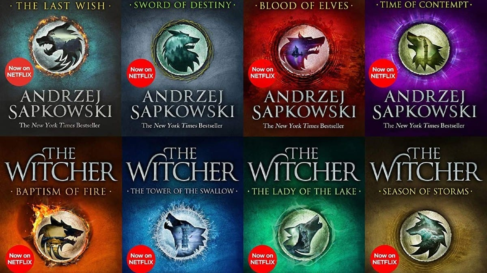

The books have been described as having a cult following in Poland and Central and Eastern European countries.
They have been translated into 37 languages and sold over 15 million copies worldwide as of December 2019.
They have also been adapted into a film (The Hexer), two television series (The Hexer and The Witcher),
several video games, and two comic book series.
The video games have been even more successful, with more than 50 million copies sold as of May 2020.
